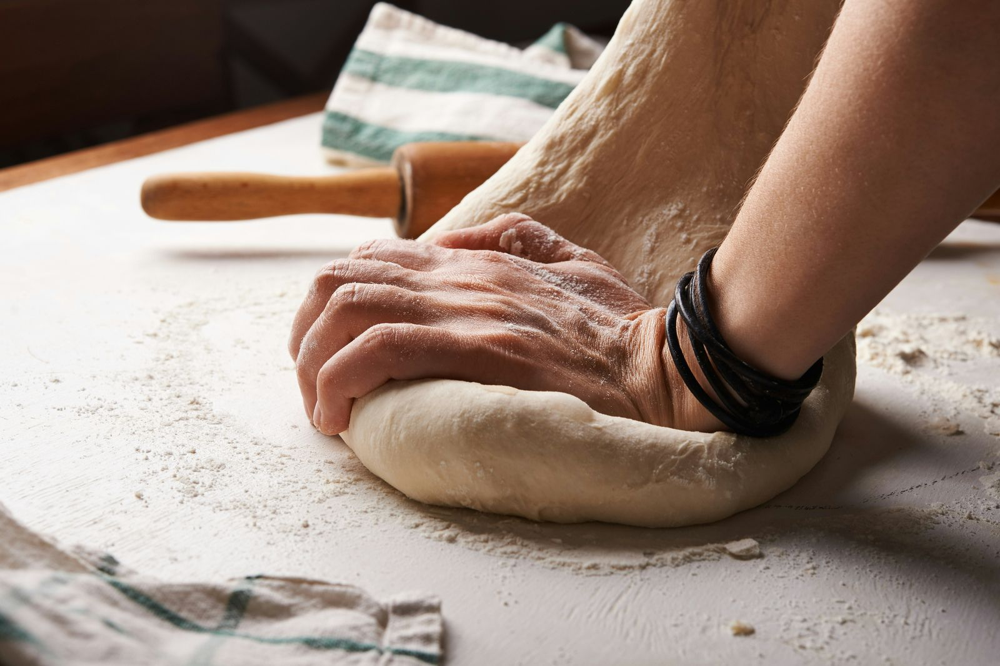

Notre histoire

Sophie et Julien Martin ont ouvert leur boulangerie il y a 8 ans, avec une idée simple : proposer un pain façonné à la main, sans détour, à partir de farines locales. Julien pétrit et cuit chaque matin dans l'atelier, visible depuis la boutique à travers la grande vitre. Sophie, à la vente, veille aux pâtisseries et à l'accueil des clients.
Depuis peu, Léa les a rejoints comme apprentie et tient la boutique l'après-midi. Ensemble, ils font vivre une boulangerie de quartier, fidèle à une clientèle qui les suit depuis le premier jour.
Farines locales, fabrication artisanale, sans conservateurs ni raccourcis : à la Boulangerie Martin, le pain reste avant tout affaire de patience et de savoir-faire.